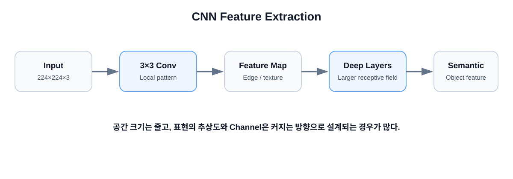

Lecture 03 · CNN
이미지를 작은 영역부터 이해하기
앞에서 본 학습 원리를 이미지에 적용합니다. CNN의 Kernel도 사람이 고정하는 값이 아니라 Dataset을 통해 학습되는 Weight입니다.

1
CNN의 핵심 아이디어
작은 지역 패턴부터 보고, Layer를 쌓으며 점점 넓은 문맥을 봅니다.
Image
↓
3×3 Kernel
↓
Local Feature
↓
더 많은 Convolution
↓
Larger Feature
↓
Semantic Feature
2
Kernel / Filter와 Convolution
Kernel / Filter이미지의 작은 영역을 훑으며 특징을 추출하는 학습 가능한 Weight입니다.
Convolution입력 영역과 Kernel 값을 위치별로 곱하고 더해 새로운 출력을 만드는 연산입니다.
Input Patch Kernel
1 2 1 1 0 -1
0 1 0 × 1 0 -1
1 2 1 1 0 -1
각 위치를 곱한 뒤 모두 더해
출력 값 하나를 만든다.
3
Feature Map과 Channel
Feature MapKernel이 특정 패턴에 얼마나 반응했는지를 공간적으로 표현한 출력입니다.
Pixel
↓
Edge / Texture
↓
Shape
↓
Object Part
↓
Semantic Feature
ChannelFeature Map의 종류를 쌓아 놓은 축이라고 볼 수 있습니다.
224 × 224 × 3
↓
Conv 64
↓
224 × 224 × 64
64개의 Filter를 사용하면 출력 Channel은 64가 됩니다.
4
Stride와 Padding
StrideKernel이 한 번에 몇 Pixel씩 이동하는지 나타냅니다.
Padding입력 가장자리에 값을 추가해 출력 크기와 경계 정보를 조절합니다.
O = floor((W - K + 2P) / S) + 1
W = 224
K = 3
P = 1
S = 1
→ O = 224
5
Receptive Field와 Downsampling
Receptive Field특정 Feature가 원본 이미지에서 영향을 받는 영역입니다.
3×3 Conv 1개 → 약 3×3
3×3 Conv 2개 → 약 5×5
3×3 Conv 3개 → 약 7×7
Downsampling공간 크기 H×W를 줄여 연산량을 줄이고 더 넓은 문맥을 보게 합니다.
224×224×64
↓
112×112×128
↓
56×56×256
6
VGG: 작은 3×3 Conv를 깊게 쌓기
작은 Kernel을 반복하면 점진적으로 더 복잡한 Feature를 만들 수 있습니다.
- 규칙적인 3×3 Convolution 중심 구조
- Layer를 깊게 쌓아 표현력을 높임
- 작은 Kernel 반복으로 더 많은 비선형 변환을 사용
AI 기초에서 본 Activation Function이 있기 때문에 “깊게 쌓는 것”이 의미를 갖습니다.
7
ResNet: 깊어져도 학습하기 쉽게
x ─────────────────┐
│ │
↓ │
Conv → ReLU → Conv │
│ │
└──── F(x) + x ←───┘
Residual / Skip Connection입력 x를 몇 Layer 뒤의 출력에 직접 더하는 연결입니다.
y = F(x) + x
CNN 한 문장: 작은 지역 패턴을 반복적으로 추출하고 조합하면서 점점 넓고 추상적인 Feature를 만드는 모델.